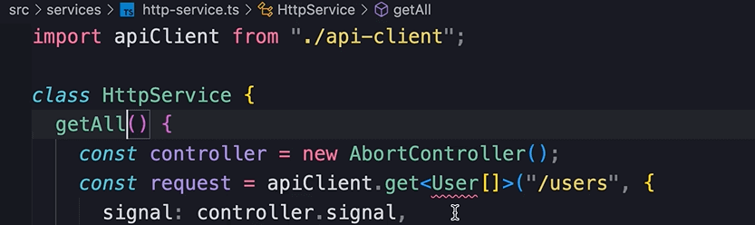
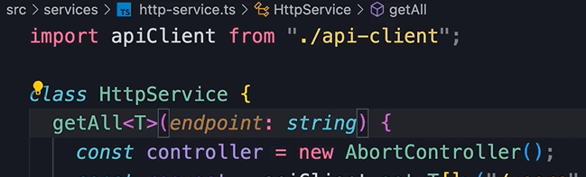
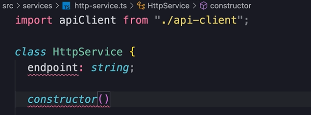
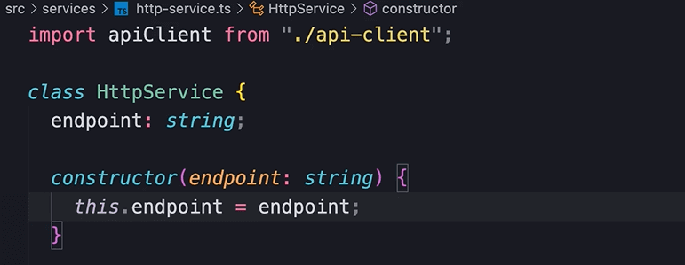
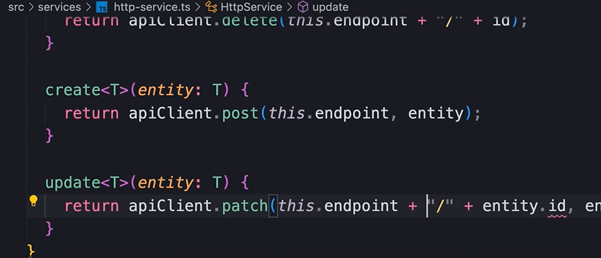
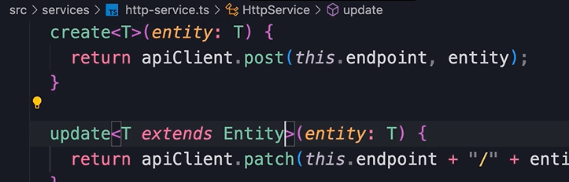
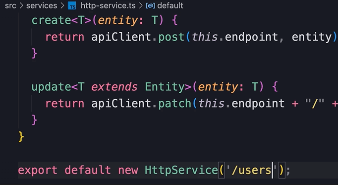
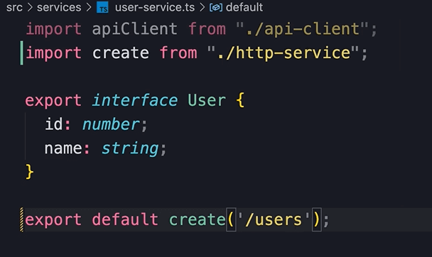
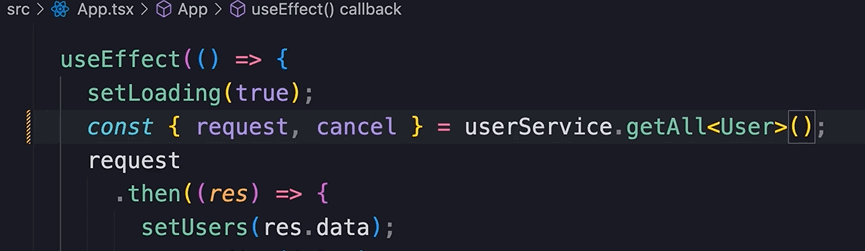

HOME
Creating a Generic HTTP Service
Topic im talking about
So, our UserService class encapulates all the logic for making http
requests.
But, if we create another service class, maybe for managing posts on a
social site, that class will be almost identical to this class.
We would have methods like get all posts, create posts, delete post,
and the implementation of those methods are going to be almost
identical to what we have in the UserService class.
The only difference is the endpoint and the object that we send to the
sever.
So let's use some Typescript magic to create a generic http service
class.
Start with a new service file...
Next paste all the code from the user-service module into it.
It's imperative that you have followed along with this backend section
of the course to have this code.
Now that we have the code pasted into the http-service module, we are
going to modify it line by line.
Anywhere we have a reference to user, we should remove it, or make it
generic.
First, delete the user interface.
Next, rename the UserService class to HttpService.
Change the getAllUsers method to just getAll.
Here we have a reference to the User interface that we just removed...

Since we dont't this class to be coupled to a particular interface,
like User, we should replace User with a generic type parameter.
So, when defining this method we add angle brackets, and use T.
T in this context is called a generic type parameter.
It's a placeholder for a type.
So when calling this method, we supply a generic type argument.
You have seen this syntax before in this course here
Also replace User, with T...
Now whatever we pass when calling the getAll method, will get used
where User was.
The endpoint
Next we need to supply the endpoint.
For this we have 2 options...
one option is to add the endpoint as a parameter to the getAll
method...

But the problem with this is, the consumer of
this class needs to provide the endpoint.
That means the app component would have to supply the users endpoint.
We will look at a different approach.
Instead of adding it as a parameter to getAll, create a property
called endpoint of type string...
Next create a constructor...

If you don't know what is a constructor, it is a function that gets
called each time an instance of this class is created.
If you have used c++ you should be familiar with this concept.
Then we give the constructor a parameter of the endpoint...
Then, in the constructor, we initialize the enpoint property with the
endpoint parameter...

If this is confusing dont't worry, we come back to this shortly, but
let's finish making this class generic.
At this point we can repalace the users endpoint with this.endpoint
With that the getAll method is completely generic now.
Now we need to make similar changes to the other functions in this
class.
delete
For the delete function just remove user from the name and change the
endpoint...
Create
For the create function, remove user from the name and then for the
parameter, change it something generic like entity, and set the type
to T...
Don't forget the generic type parameter, and to set the endpoint to
this.endpoint.
Do the same for the update function...

Now we have a problem because our Typescript compiler doesn't know
that entitys, which are instances of type T, have a property called
id.
To solve this problem, we need to add a constraint to this type.
We need to tell the compiler that objects of type T should have a
property called id.
To do this we use an interface.
So, at the top, create an interface called Entity, with a property
called id of type number.
Now in the update method, we tell the compiler that objects of type T
should extend the entity interface, which should have the id
property...

Now, at the end, we don't want to create a new instance of this class,
because we have to pass an endpoint...

and we don't want to hardcode an endpoint like /users, because that
would keep our http-service from being reusable.
So instead of exporting an instance of this class, we should export a
function for creating an instance of this class.
So create a function called create with a parameter called endpoint of
type string, and return a new HttpService with the current endpoint...
then export the function...
Now back to the user-service module, delete the
entire UserService class.
Instead, import the create function of the http-service module, and
export create with the users endpoint...

With that we don't need to import api client into user-service
anymore.
app component errs
We have several errs in the app component.
These errs are easily fixed by replacing the user methods with the
generic ones.
We have one last err.
It's because the Typescript compiler doesn't know the type of objects
we are going to fetch...
For fix, we specify the type parameter...

Now the next time we need to create a concreate service class all we
have to do is create an interface and call the create function to
create a service.